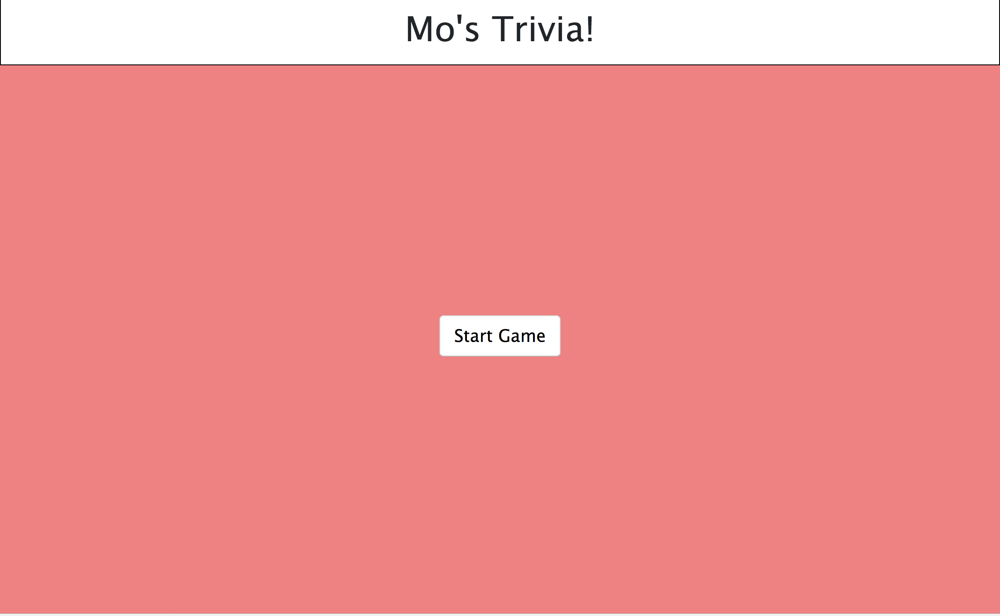
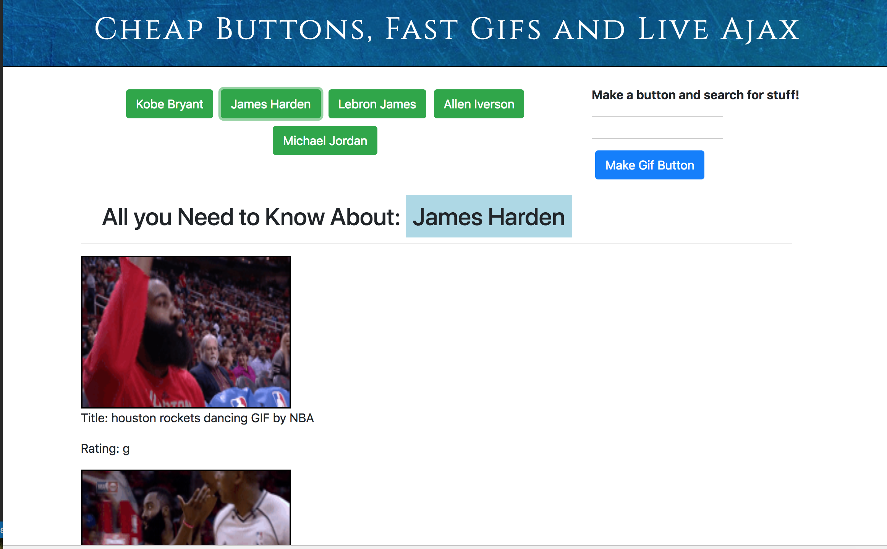

Consumed at a young age, Momin Ahmad’s passion for the world of music moves beyond form and composition. By maintaining involvement in the many facets that make up the present day music industry, he generates a unique perspective through multiple lenses resulting in consistency and confidence. In addition to his schooling at the University of Texas, intensive industry experience both performing and behind the scenes directly influences his knowledge and expertise on the subject. Graduating with a minor in music in 2014, Mo participated in just over three years of UT organized music groups as well as countless performances elsewhere in the Austin area. His familiarity with the local Austin musicians and industry has strengthened his network of relationships within the area.
Momin’s current musical endeavors provide a look into his particular strengths in the area of performance and composition. Within the past year he was contracted for multiple theatre orchestral performances as well as played a major role in the composition for the US State Department and UT South Asian Studies joint funded jazz-fusion ensemble, Sankut. Ahmad has been in considerable demand by local artist for studio aid and musical composition, working with such bands as Cari Q, Those Damn Eyes, Griffin Swank, and his own project The Irish Exit.
Outside of performing, Momin has a heavy interest of involvement witinh the music industry. Presently, his primary course of involvement is through his own company, Small Batch Productions. Created in early 2014, he has enlisted the help of local industry sharks to create an easy and affordable way to record live audio and video for up-and-coming touring and local bands. In his free time, Mo maintains an internship at Nine Mile Records and Booking located in Austin, TX. His relationship with Nine Mile has provided valuable industry experience for the young entrepreneur, allowing him opportunities to book artist as well as help coordinate and organize events. His other label responsibilities include logging metadata and corresponding with music streaming providers. Encouraged by his peers, Mo has also begun collaboration with local manager in prospects of advancing the career of premiere singer/songwriter Cari Q. He aims to begin booking for local musicians at the start of the new year.
Within the timespan of his career Momin has accumulated a variety of knowledge from multiple perspectives through his experience in industry, performance, and recording. His layered approach to tasks is accompanied by a strict determination to excel in his field. Commanding in scenarios with a dose of enthusiasm for his craft, Momin Ahmad, offers a multi-faceted alternative for musical aims.
Outside of performing, Momin has a heavy interest of involvement witinh the music industry. Presently, his primary course of involvement is through his own company, Small Batch Productions. Created in early 2014, he has enlisted the help of local industry sharks to create an easy and affordable way to record live audio and video for up-and-coming touring and local bands. In his free time, Mo maintains an internship at Nine Mile Records and Booking located in Austin, TX. His relationship with Nine Mile has provided valuable industry experience for the young entrepreneur, allowing him opportunities to book artist as well as help coordinate and organize events. His other label responsibilities include logging metadata and corresponding with music streaming providers. Encouraged by his peers, Mo has also begun collaboration with local manager in prospects of advancing the career of premiere singer/songwriter Cari Q. He aims to begin booking for local musicians at the start of the new year.
Within the timespan of his career Momin has accumulated a variety of knowledge from multiple perspectives through his experience in industry, performance, and recording. His layered approach to tasks is accompanied by a strict determination to excel in his field. Commanding in scenarios with a dose of enthusiasm for his craft, Momin Ahmad, offers a multi-faceted alternative for musical aims.
PORTFOLIO

Rideshare on a budget. Find a neighbor who works near you and everyday commute is good to go!
Mo's Trivia 
A basic trivia game showcasing some basic Javascript skills.
Gif Machine 
A machine that makes buttons that make gifs...Shows off some API and ajax knowledge

A work in progress...looks great and hopefully will play great in the near future.